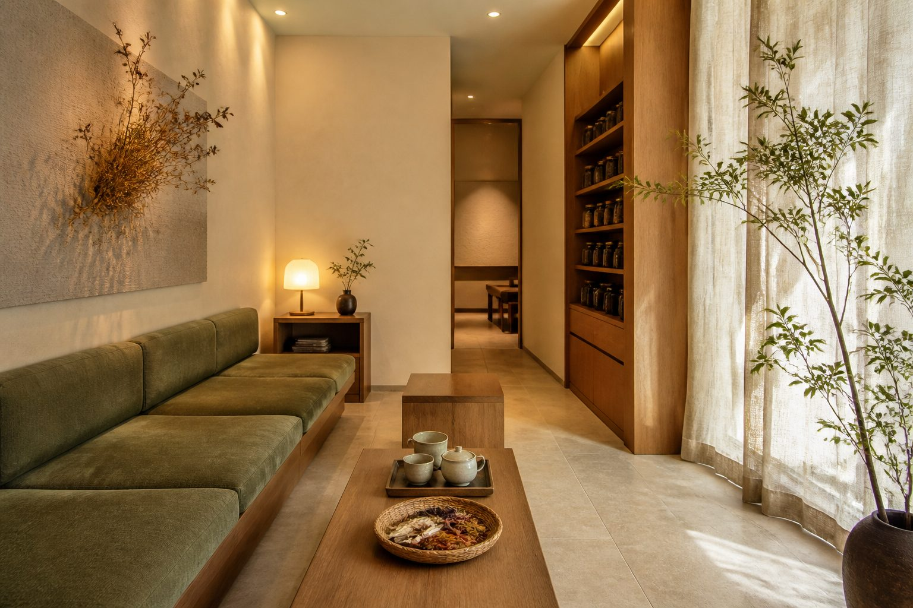

경항부 통증6주
오후 두통이
거의 사라졌습니다
통증7 → 2
가동45° → 70°
두통주 4 → 1회
침·약침 주 2회 + 자세 운동. 통증 점수는 10점 척도, 가동 범위는 좌회전 기준입니다.

제목을 누르면 내용이 열립니다. 카테고리로 골라 보실 수 있습니다.
책상에 앉아 있으면 어깨가 조이고 오후에는 머리까지 아팠습니다. 마사지를 받아도 이틀이면 돌아왔고요. 원장님은 어깨보다 목과 등 상부의 움직임을 먼저 보셨어요. 침과 약침으로 통증을 낮추고, 4주째부터는 자세 운동과 베개 높이를 같이 조정했습니다. 6주가 지난 지금은 오후 두통이 거의 없고, 스스로 스트레칭하는 게 습관이 됐습니다.
예전에 다이어트 한약을 먹고 요요가 와서 망설였습니다. 이번에는 체질 진단을 먼저 하고, 식사 기록을 2주마다 같이 봤어요. 처방도 두 번 바뀌었습니다. 굶지 않았고 저녁 시간만 앞당겼는데 12주 동안 8.2kg이 빠졌습니다. 지금은 한약을 끊고 3개월째인데 체중이 크게 흔들리지 않습니다.
침을 맞고 통증이 줄었다고 치료가 끝난 것은 아닙니다. 통증이 줄어든 시점에는 이미 몸이 다른 방식으로 버티고 있는 경우가 많습니다. 어깨가 아파서 목을 덜 쓰면 목 주변 근육이 굳고, 다시 어깨로 부담이 갑니다. 그래서 저는 통증 점수와 함께 수면 시간, 하루 앉아 있는 시간을 같이 봅니다. 이 두 가지가 바뀌지 않으면 같은 부위로 다시 오시는 분이 많습니다.
아침에 세수하다가 얼굴이 안 움직여서 놀랐습니다. 대학병원에서 진단받고 3주쯤 지나서 이곳에 왔어요. 처음에는 눈이 잘 감기지 않아 불편했는데, 침 치료와 한약을 같이 하면서 6주쯤부터 입가가 조금씩 움직였습니다. 지금은 크게 웃을 때만 좌우 차이가 살짝 보입니다. 매번 표정 사진을 찍어 비교해 주셔서 진전을 알 수 있었어요.
다리까지 저려서 걷기가 힘들었고, 병원에서는 수술 이야기도 들었습니다. 원장님은 MRI를 보시고 먼저 보존 치료를 해 보자고 하셨어요. 첫 2주는 침과 약침으로 통증을 낮추는 데 집중했고, 이후에는 골반 정렬과 코어 운동을 같이 했습니다. 6주째에는 저림이 거의 없어져 일상생활로 돌아갔습니다. 수술이 필요하면 바로 말씀하시겠다고 해서 신뢰가 갔습니다.
출산 후 6개월인데 손발이 붓고 오후만 되면 기운이 없었습니다. 수유 중이라 한약을 먹어도 되는지가 제일 걱정이었는데, 처방 가능한 약재로만 조제해 주신다고 해서 시작했습니다. 2주마다 부종과 수면 시간을 확인했고, 6주째에는 아침에 얼굴 붓기가 많이 줄었습니다. 아이 낮잠 시간에 맞춰 예약을 잡아 준 것도 도움이 됐어요.
한약은 보통 2주를 한 단위로 봅니다. 첫 2주는 몸이 반응하는지 확인하는 기간이고, 그다음 2주에 처방을 조정합니다. 이때 확인하는 것은 체중만이 아니라 수면 시간, 대변 상태, 오후의 피로감입니다. 이 세 가지가 함께 좋아지지 않으면 용량이나 약재를 바꿉니다. 반대로 숫자만 빠르게 줄고 컨디션이 무너지면 감량 속도를 줄입니다.
겨울만 되면 팔과 다리가 가려워서 긁다가 잠을 깨는 날이 많았습니다. 연고를 발라도 금방 다시 건조해졌고요. 상담에서 물 섭취와 실내 습도, 씻는 습관까지 여쭤보시고 한약과 외용제를 같이 처방해 주셨습니다. 4주째부터 밤에 긁는 횟수가 확 줄었습니다. 지금은 보습제만 쓰고 있고, 겨울 전에 한 번 더 상담받으려고 합니다.
운동을 시작하면 어깨 앞쪽이 아파서 자세를 봐 달라고 했습니다. 사진을 찍어 어깨 위치를 비교해 주셨고, 추나로 흉추 움직임을 풀고 매주 운동 3가지를 숙제로 냈습니다. 8주 동안 주 1회 방문했는데, 지금은 거울로 봐도 어깨가 덜 말려 있습니다. 무엇보다 운동할 때 통증이 없어진 게 제일 좋습니다.
해당 카테고리의 후기가 아직 없습니다.
후기는 환자분 동의 후 개인 정보를 지우고 각색한 예시입니다. 치료 효과와 기간은 개인에 따라 다르며, 같은 결과를 보장하지 않습니다.
통증 점수와 가동 범위는 매 방문 같은 방식으로 측정합니다. 아래는 샘플 페이지용 예시 케이스입니다.
침·약침 주 2회 + 자세 운동. 통증 점수는 10점 척도, 가동 범위는 좌회전 기준입니다.
추나·약침 주 2회, 3주차부터 코어 운동 병행. 영상 검사 소견은 개인차가 큽니다.
체질 진단 후 2주 단위 처방 조정. 식사 기록과 수면 시간을 함께 관리했습니다.
위 수치는 샘플 페이지용 예시이며 실제 환자 기록이 아닙니다. 치료 결과는 개인에 따라 다릅니다.
초진 50분, 지금 상태를 확인하고 치료 계획을 표로 정리해 드립니다.